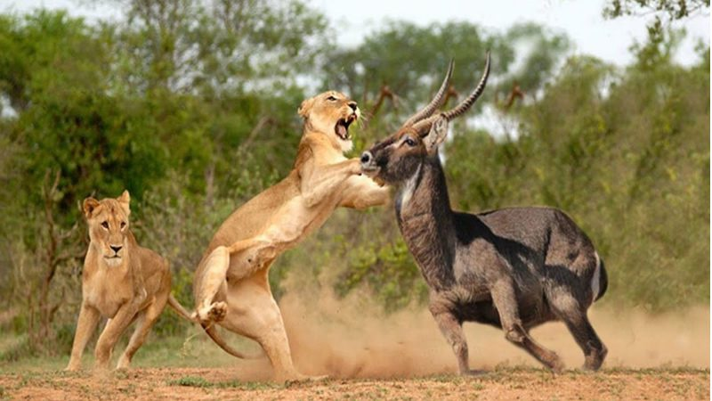
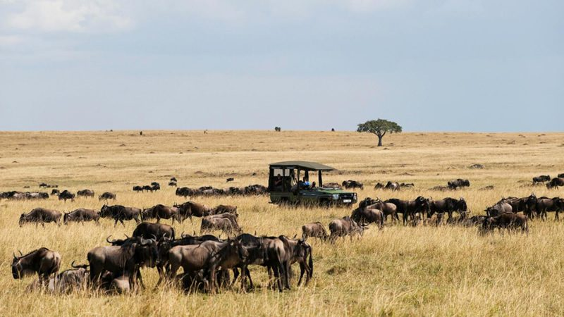
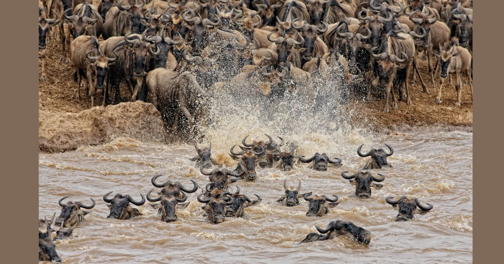
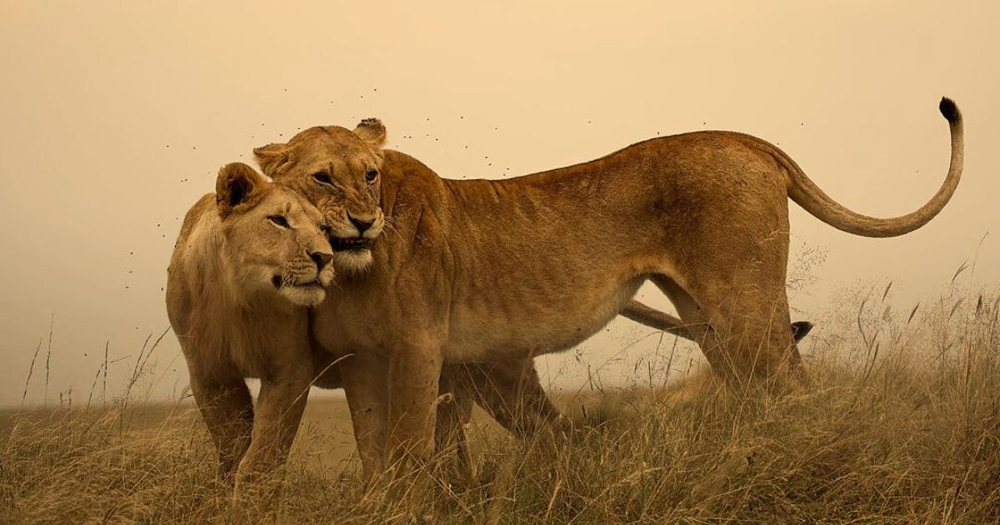

- +254 740 596771
- roamingnomadsafari@gmail.com
Discover the wonders of Kenya's famed Masai Mara Game Reserve with Roaming Nomads' exclusive 2-day safari package. Departing from Nairobi, this immersive journey offers a perfect blend of luxury and adventure. Witness breathtaking landscapes, encounter iconic wildlife including the Big Five, and indulge in the comfort of luxury lodges amidst the wilderness. With expert guides and seamless logistics, our package ensures an unforgettable safari experience tailored to your convenience. Book now and embark on a journey filled with thrilling encounters and cherished memories.
.jpg)


.jpg)


Kenya is known for its breathtaking landscapes, diverse wildlife, and rich culture. And one of the best ways to experience all of this is through a luxury safari in the Masai Mara. Located in the southwestern part of Kenya, the Masai Mara National Reserve is a must-visit destination for any safari enthusiast
One of the main highlights of a Masai Mara luxury safari in Kenya is the game drives. These are guided tours through the reserve in a 4×4 Toyota Land cruiser safari jeep with open roof top for game viewing vehicle, led by experienced safari guide from Roaming Nomads. The Masai Mara is home to the famous Big Five (lion, leopard, elephant, buffalo, and rhino) as well as a variety of other wildlife such as giraffes, zebras, and hippos. The game drives usually take place in the early morning or late afternoon when the animals are most active, and offer the opportunity to see these magnificent creatures up close in their natural habitat.
\After a long day of game drives and exploring Kenya, you’ll want a comfortable and luxurious place to rest and recharge. The Masai Mara offers a range of luxury accommodations, from tented camps to lodges, all with stunning views of the reserve. These accommodations offer all the amenities you would expect from a luxury hotel, including gourmet meals, spa services, and personalized service.
Roaming Nomads driver and Staff will pick up the clients on arrival in the airport or hotel in the morning, a short safari briefing will be conducted then the clients depart Nairobi by road heading through the view point of the great rift valley escarpment, a stopover at the great rift valley escapement for the photo and shopping then continue with the safari to Masai Mara game reserve. Arriving in time for lunch at the luxury lodge, after lunch relax, and then proceed for the evening game drive until 6.30 pm. Masai mara game reserve is the Kenyan Best Known Park for the big five, Leopard, Lion, Rhino, elephant, buffalo it is also the home of many wild animals like hyena, Giraffe, eland, wildebeest, zebra, impala, Thomson’s and grant gazelle, and much more African wild animals. Dinner and overnight at luxury lodgee
Second day with Roaming Nomads, Wake up early morning for the full breakfast, then proceed for the adventure in the park for the viewing of the animals. Masai Mara Game reserve has a high concentration of wild animals and this makes the adventure with Roaming Nomads amazing and joyful. Picnic lunch will be served and there will be an optional visit to the Masai Village to witness the dancing and singing by the Masai Warriors and women. Clients will have a glimpse into their homestead and opportunity to take the picture of the home and of the Masai warriors. Dinner and overnight at the luxury lodge.
Third day with Roaming Nomads, wake up very early morning to prepared for the morning game drive inside the Masai Mara game reserve. After the morning game drive return to the luxury lodge for the full breakfast then depart for Nairobi by road, Lunch will be served en route, arriving in Nairobi in the afternoon and the driver guide will drop the clients in their hotel or airport and your safari ends with great memories from Roaming Nomads.
For a truly unforgettable experience, consider adding a hot air balloon safari organized by Roaming Nomads to your Masai Mara luxury safari in Kenya. This allows you to see the reserve from a different perspective, floating above the vast savannah and getting a bird’s eye view of the wildlife below. The hot air balloon safari usually takes place at sunrise, and includes a champagne breakfast upon landing
A knowledgeable and experienced safari guide from Roaming Nomads can make all the difference in your Masai Mara luxury safari in Kenya experience. They will not only take you to the best spots for wildlife sightings, but also provide valuable information about the animals, their behavior, and the ecosystem. They can also answer any questions you may have and share interesting stories and facts about the reserve and its inhabitants.
In conclusion, a Masai Mara luxury safari in Kenya offers a once-in-a-lifetime experience that combines adventure, luxury, and cultural immersion. With game drives, luxury accommodations, cultural experiences, hot air balloon safaris, and knowledgeable safari guides, you are sure to have an unforgettable safari experience in the Masai Mara. So pack your bags and get ready for an adventure of a lifetime!
✅All applicable National Park Entrance fees
✅Transport By 4×4 land cruiser Safari jeep customized open roof
✅Round trip transport from Nairobi to the designated National Park
✅Extensive Game drives while in the national parks
✅Three
meals a day while on the Safari, Breakfast, lunch and dinner
✅Bottled drinking water
✅Finest accommodation in lodge or camp
✅Airport picks up on arrival in Nairobi
✅Services of a qualified proffessional driver guide